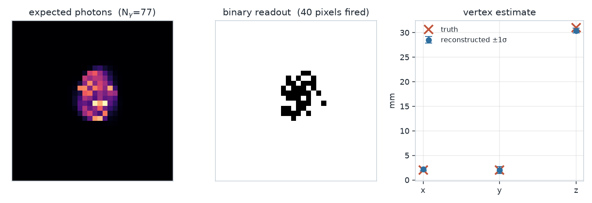
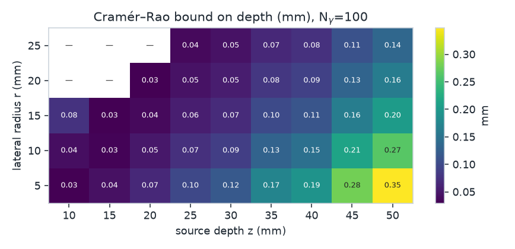

Locate a radiation interaction from a single-photon image, and design the lens array that makes it possible.
A scintillator turns a particle interaction into a flash of light. A lens array in front of a single-photon sensor turns that flash into a pattern of blobs. Where the blobs land encodes where the interaction happened — including its depth, which a plain camera cannot see. RIA runs both directions of that map.
You have a sensor image; you want the interaction vertex
(x, y, z) and its photon count, together with the solver's
statement of how well-determined the fit is.
You have a lens array; you want to know how precisely it could ever locate a source, and which focal lengths would do better.
import ria # the RIA package
system = ria.imager() # an empty imager
system.addScint(size=(30, 30, 40), # scintillator volume (x, y, z), mm
working_distance=5.0) # lens plane -> front face, mm
system.addLens(lenses=[{"position": (0.0, 0.0), # lens centre on the lens plane, mm
"f": 9.0, # focal length, mm
"aperture": 1.5}], # lens radius, mm
blur_floor=0.12) # residual blur every blob carries, mm
system.addDetector(size=(46.15, 32.84), # sensor active area, mm
pixels=(24, 24), # one-bit pixels across that area
imaging_distance=20.477, # lens plane -> sensor, mm
dark_count=1e-9) # per-pixel background rate
s1 = system.addVertex([2, 2, 20], photons=80) # a flash: position mm, detected photons
image = system.forward(s1, seed=1) # the binary sensor image
result = system.invert(image, truth=s1, # recover the vertex from the image
budget=30, stall=5) # solve <= 30 s, stop after 5 s no gainphotons is the detected count — the number your sensor
actually registers — not the isotropic emission. Every parameter above is
explicit; nothing about the geometry is assumed. The full walk-through of
these calls is Building a system; the
quick-start script is examples/0_quick_start.py.
How every piece is defined, for anyone who needs the details rather than the quick start.
The imager() workflow end to end: addScint, addLens,
addDetector, addVertex, visibility, forward, invert and validate.
How lens positions, focal lengths and blur are defined; the chief-ray map; the fixed system constants; the fidelity limits of the model.
The exact array format, how it is formed, why the photon count is the detected count, saturation, and supplying your own data.
How the likelihood is emitted as an algebraic model and solved by the installed rekin package; dense and sparse encodings; result statuses.
The full algebraic model handed to the solver — variables, macros, constraints and the objective — from real events.
Each example in examples/ is a standalone script that prints
a narrated report and writes the exact .rn model it solved into
examples/models/. In brief:
0_quick_start.pyOne lens, one vertex, the whole pipeline. A single lens sees depth only through its own blur, so the inversion comes back about 2.6 mm off, almost all of it in depth — which is exactly what the array in the later examples fixes.

invert() receives. Right: the reconstruction against the
truth.1_single_source_coarse.py,
2_single_source_realistic_scale.pyThe same source and the same 77 photons on a 37-lens array, at two
sensor binnings. On a coarse 12×12 sensor the reconstruction lands about
20 mm off, and validate() shows this is not a solver
failure: the recovered point explains the image at least as well as the
truth, so the 144-pixel one-bit image is genuinely ambiguous. On a
realistic sensor's 6688×4760 pixels at 6.9 µm pitch the sensor stops
saturating and the same source is recovered to about 0.05 mm. Only the
fired pixels enter the model, so its size scales with the photon budget,
not the pixel count.
3_two_sources_coarse.py,
4_two_sources_realistic_scale.py,
5_three_sources_realistic_scale.pyA Compton scatter deposits energy more than once and the light superposes; the model gets one block of unknowns per source. At a 24×24 binning two sources show the impostor failure that a single source has already outgrown at that resolution — one source is recovered, the other replaced by a nearer, brighter impostor that rides the brightness cap, so multi-source needs more resolution than one source does. At realistic-scale pitch both are located to about a millimetre. Three sources at realistic-scale pitch is the current frontier: the physics is favourable, but the twelve-variable joint search is strongly multimodal and returns a best-effort incumbent within the budget rather than a certified optimum — an optimisation limit, not an information one.
6_lens_design.pyChoosing the focal lengths rather than locating a source. The Cramér–Rao bound maps the best possible depth precision at every point of the working volume; the example then optimises the focal lengths against it. The mean-precision design matches an independent coordinate sweep; the minimax design — minimise the worst log CRB anywhere — is a query the sweep cannot even pose, and improves worst-case precision 2.3× over the starting array. Both designs are cross-checked against an independent numpy Fisher implementation.

The same 37-lens instrument, cold start over the full volume, as run by the shipped examples:
| example | sources | binning | 3-D error |
|---|---|---|---|
| 1 | 1 | 12 × 12 | ~20 mm (information-limited) |
| 2 | 1 | realistic 6.9 µm | ~0.05 mm |
| 3 | 2 | 24 × 24 | one ~3 mm, one lost to an impostor |
| 4 | 2 | realistic 6.9 µm | both ~0.1–1.5 mm |
| 5 | 3 | realistic 6.9 µm | best-effort |
The coarse-binning error is a property of the sensor, not of the solver: a one-bit pixel saturates, and with few fired pixels a nearer source can genuinely explain the image better than the true one. Finer binning restores identifiability up to two sources; three sources is limited instead by the global search, not the sensor.
The CRB and the inversion assume different sensors. The design side's
Cramér–Rao bound assumes Poisson photon counting; the actual readout — and
forward() — is binary one-bit. The CRB figures are the floor
for a counting sensor and are not attainable by a binary one, so the two
should not be compared directly.
Every inversion and design solve reports the solver's own status:
delta-global means global optimality was proved,
local means a certified local optimum, and
best-effort means the best point found in the budget, with no
certificate. The status is never rounded up. In the shipped examples the
imaging inversions return local (or best-effort on
the three-source frontier of example 5); the design solves of example 6
return local and best-effort. Independently of the solver,
validate() recomputes the likelihood through the numpy forward
optics and reports whether the fit explains the image at least as well as
the truth.
The optics are the paraxial chief-ray approximation: each lens paints a
circular Gaussian blob whose centre carries the depth (through the
magnification S*/u) and whose width carries the defocus. This
is exact on-axis but draws a circle where a real lens draws an ellipse
off-axis, and it over-trusts shallow-depth focus. For design studies that is
the right trade — closed form, millions of evaluations; for final numbers,
calibrate against measurement.
Each blob is evaluated as a pixel-convolved density — the pixel's own
second moment w²/12 is folded into the blob variance — so the
sub-pixel spots a plenoptic array produces are not aliased away, and the
identical expression is emitted to the solver, keeping forward and inverse
models the same term for term.